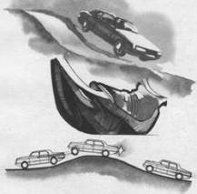

Повышение управляемости при подбросе, подскоке, прыжке и раскачивании
Можно выделить три опасные ситуации, при которых автомобиль, преодолевая бугор, трамплин или другую неровность, на короткое время полностью или частично теряет управляемость:
подброс – ситуация, при которой передняя подвеска полностью разгружается и колеса частично теряют контакт с дорогой;
подскок – ситуация, при которой от дороги отрываются либо передние, либо задние колеса;
прыжок – ситуация, при которой автомобиль полностью отрывается от дороги.
Первые две ситуации хотя и неприятны, но не опасны на ровном прямолинейном участке дороги. При их преодолении не следует “закрывать газ”, так как вращающиеся колеса создают эффект гироскопа, стабилизирующий автомобиль при приземлении. Очень устойчив при преодолении таких неровностей переднеприводный автомобиль, двигатель которого расположен поперек.
Коленчатый вал двигателя и маховик, вращающийся в продольном направлении, имеют большую массу и также оказывают существенное влияние на стабилизацию автомобиля.
Но если подброс или подскок предшествует повороту и происходит в фазе подхода или входа в поворот, то он может отрицательно повлиять на безопасность. Поведение автомобиля плохо поддается прогнозированию, и борьба водителя за устойчивость может наложиться по времени на момент, требующий безошибочного маневра, например при входе в поворот. Потеря управляемости при входе в поворот вызывает стресс даже у опытного водителя и может спровоцировать грубую ошибку – торможение с блокированием колес.
Еще большую опасность таит в себе прыжок: во-первых, потому что на относительно длительное время автомобиль лишается управляемости при отрыве от дороги и приземлении вследствие повторного подброса из-за реакции сработавшей подвески, а во-вторых, потому что во время прыжка автомобиль, загруженный весом двигателя, наклоняется вперед (в тех случаях, когда двигатель расположен спереди) и при приземлении получает сильнейший удар о грунт передней подвеской. Даже новые жесткие пружины и газогидравлические современные амортизаторы не способны полностью смягчить удар. Поэтому в результате “бесстрашного полета” автомобиль почти всегда получает серьезные повреждения (поломки картера двигателя, обламывание маслоприемника насоса, нарушение углов развала и сходимости колес и др.). Результатами непрогнозируемого прыжка и “полета” могут быть приземление на передний бампер и очень опасное опрокидывание вперед с последующим поперечным вращением автомобиля. Даже автогонщики применяют прыжок лишь в исключительных случаях, так как в “полете” автомобиль теряет свои динамические качества – не ускоряется, а последствия прыжка могут быть плачевными.

Перед подбросом, подскоком, прыжком поставьте левую стопу на тормозную педаль, а в момент отрыва передних колес от грунта коротким тормозным импульсом прижмите передние колеса к дороге. Это позволит вам избежать потери управляемости автомобиля и сохранить целостность передней подвески и картера двигателя.
Самым эффективным приемом стабилизации автомобиля перед подбросом, подскоком и прыжком является резкое короткое торможение левой или правой ногой в момент разгрузки (отрыва) передних колес. Этот прием позволяет создать вращательный момент вокруг задних колес и опустить передние колеса на дорогу, исключив их высокий подброс. Намного мягче и дозированней выполнение приема левой ногой при открытом дросселе. Если же выполнять прием правой ногой, то не удается воспрепятствовать интенсивной реакции подвески и повторному подбросу автомобиля после “приземления”.